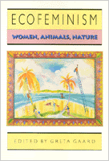

Feminist scholars and activists explore the relationships among humans, animals, and the natural environment
Feminist scholars and activists explore the relationships among humans, animals, and the natural environment


 Feminist scholars and activists explore the relationships among humans, animals, and the natural environment
Feminist scholars and activists explore the relationships among humans, animals, and the natural environment

|  |
Ecofeminismedited by Greta Gaardpaper EAN: 978-0-87722-989-6 (ISBN: 0-87722-989-9) |
"The essays...are a stimulating and welcome addition to this burgeoning body of critical thought."
—Canadian Woman Studies
Drawing on the insights of ecology, feminism, and socialism, ecofeminism's basic premise is that the ideology that authorizes oppression based on race, class, gender, sexuality, physical abilities, and species is the same ideology that sanctions the oppression of nature. In this collection of essays, feminist scholars and activists discuss the relationships among human begins, the natural environment, and nonhuman animals. They reject the nature/culture dualism of patriarchal thought and locate animals and humans within nature. The goal of these twelve articles is to contribute to the evolving dialogue among feminists, ecofeminists, animal liberationists, deep ecologists, and social ecologists in an effort to create a sustainable lifestyle for all inhabitants of the earth.
Among the issues addressed are the conflicts between Green politics and ecofeminism, various applications of ecofeminist theory, the relationship of animal liberation to ecofeminism, harmful implications of the romanticized woman-nature association in Western culture, and cultural limitations of ecofeminism.
Excerpt available at www.temple.edu/tempress
Preface
1. Living Interconnections with Animals and Nature – Greta Gaard
2. Ecofeminism: Linking Theory and Practice – Janis Birkeland
3. Dismantling Oppression: An Analysis of the Connection Between Women and Animals – Lori Gruen
4. Roots: Rejoining Natural and Social History – Stephanie Lahar
5. Ecofeminism and the Politics of Reality – Linda Vance
6. Questioning Sour Grapes: Ecofeminism and the United Farm Workers Grape Boycott – Ellen O'Loughlin
7. Animal Rights and Feminist Theory – Josephine Donovan
8. The Feminist Traffic in Animals – Carol J. Adams
9. For the Lover of Nature: Ecology and the Culture of the Romantic – Chaia Heller
10. From Heroic to Holistic Ethics: The Ecofeminist Challenge – Marti Kheel
11. A Cross-Cultural Critique of Ecofeminism – Huey-li Li
12. Ecofeminism and Native American Cultures – Pushing the Limits of Cultural Imperialism? – Greta Gaard
Selected Bibliography
About the Contributors
Index
Greta Gaard is Assistant Professor of Composition and Women's Studies at the University of Minnesota, Duluth.
Contributors: Janis Birkeland, Lori Gruen, Stephanie Lahar, Linda Vance, Ellen O'Loughlin, Josephine Donovan, Carol J. Adams, Chaia Heller, Marti Kheel, and Huey-li Li, and the editor.
Women's Studies
Nature and the Environment
Ethics and Action, edited by Tom Regan.
No longer active.
© 2015 Temple University. All Rights Reserved. This page: http://www.temple.edu/tempress/titles/948_reg.html.